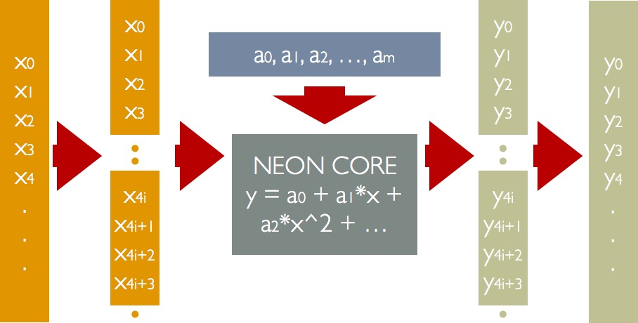
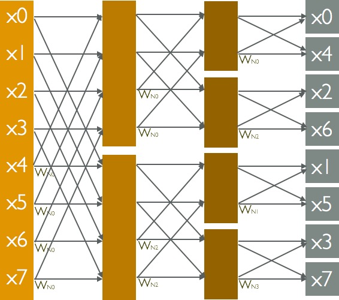

Writeup
Summary
We create two neon-based libraries for android developers.
Matrix Library called FaMatrix. The library contains most useful matrix operations, including matrix transpose, addition, and multiplication. The library support short, int and float data types. The matrix multiplication achieves 14.6x speedup to Java version, 4.1x to C version multiplication. The transpose can achieve 8.9x to Java version, and 1.5x to C version.
Basic Tools Library called FaCollection. This is a basic library and provide three basic tools, including vectorized calculation, sort and fast fourier transform.
Based on our our library, we develop a android graphic application to showcase our works. The first application we developed is a rotating points. Here we randomly generate some points in 3D space and then show their projection on X-Y Flat in the screen. Then we use FaMatrix to calculate the next location of these points and then draw their projections again. Finally, we can show a dynamic processing of rotating points.

Approach
Matrix Transpose
Neon lanes can be used to improve the cache performance of matrix transpose operation. For naive version matrix operation, we can simply use result[j][i] = matrix[i][j] to achieve our goal. But since we take big steps when storing result, the cache will alway miss. To improve the cache hit rate, we use the following algorithm to calculate matrix transpose operation using Neon.
For 4x4 matrix we first load each row to each lanes, then interleave the first lane and third lane, finally interleave the first lane and third lane again, as shown in the following image.

Pic 3.1 4x4 Matrix Transpose
For 8x8 matrix transpose, we can use the same mechanism: Load one row into two lanes, say lane_high, lane_low. Then interleave each lane. lane_high 0 interleaves with lane_high 4
lane_high 1 interleaves with lane_high 5
lane_high 2 interleaves with lane_high 6
lane_high 3 interleaves with lane_high 7
lane_low 0 interleaves with lane_low 4
lane_low 1 interleaves with lane_low 5
lane_low 2 interleaves with lane_low 6
lane_low 3 interleaves with lane_low 7
 Pic 3.2 8x8 Matrix Transpose
Pic 3.2 8x8 Matrix Transpose
After three interleaving operation, we can the get the result.
For matrix with larger size, we split it into multiple 8x8 matrix, then use previous algorithm to calculate them. Notice that if height and width of matrix is the multiple of 8, there must be leftover elements. Leftover elements can be handled using overlapping. This involves processing some of the elements in the array twice. Twice processing will not change the value of transpose.
 Pic 3.3 Deal with Overlapping in Matrix Transpose
Pic 3.3 Deal with Overlapping in Matrix Transpose
To do the interleaving operation, we use VZIP instruction. VZIP interleaves the 8, 16 or 32-bit elements of a pair of vectors. The operation is the same as that performed by VST2 before storing, so use VST2 rather than VZIP if you need to zip data immediately before writing back to memory.
 Pic 3.4 Interleaving Two Lanes using VZIP
Pic 3.4 Interleaving Two Lanes using VZIP
Matrix Multiplication
Matrix multiplication is widely used in many applications. So we decided to make improvements on that. As we all know, the naive matrix multiplication is like this:
for (int i = 0; i
< M; i++)
for (int j = 0; j < N; j++)
for (int k = 0; k < K; k++)
C[i][j] += A[i][k] * B[k][i];
The implementation is cache unfriendly. Spatial locality in A matrix is good, but in B, the spatial locality is bad since the program access different row in B in every iteration, which need to load a new row into cache. The temporal locality in A matrix is also a problem. We need to reread the same values of A multiple times to compute different elements of C, and A's row could have been evicted from cache by the time we want to reread it by one of B's rows.
Pic 3.5 Blocked Matrix Multiplication
To improve this, we split each matrix into blocks, so that we can compute partial result for block C while required blocks of A and B remain in cache.
Pic 3.6 Parallel within Block
Within the block, we use SIMD to parallelize the operation, as shown in pic. 3.6. The expected speedup is 4 time faster than blocked C version multiplication.
We could carefully deal with the leftover to approach the expected speedup. The main goal is to fully utilize the neon lanes.
Pic 3.7 Leftover in N
In pic. 3.7, there are leftover in N range. Therefore within the block, there must be some elements that cannot fit into the lanes. So we still parallelize in the block until the elements cannot fit into the lanes.
Pic 3.8 Leftover in M
In pic. 3.8, there are leftover in M range. In this situation, all elements still can fit into the SIMD lanes, since data in same row will be put into SIMD lanes, while the rows don’t have leftover.
 Pic 3.9 Leftover in M and N
Pic 3.9 Leftover in M and N
In pic. 3.9, there are leftover in both M and N range. In this case, we choose to implement the leftover using sequential way.
Point-Value Representation of A Function
This is a basic function we did with neon. Point-value representation is a processing of calculate the y given x and a function f, that is, y = f(x).
If we need to put multiple same instruction to a set of value {x}, this function will be extremely useful. The basic processing of using neon to calculate the point value is like Figure 3.10.
Pic 3.10 Data Flow of Calculating Point-Value Representation
For the left points, if the total length of vector is not multiple of 4, we can simple use overlap to calculate the leftover.

PPic 3.11 Deal with Leftover on Calculating Point-Value Representation
So we will do only one more time of calculation with left points.
Align Access Sort
Align Access Sort (AA-Sort) is parallel sorting algorithm for multi-core SIMD processors. In this paper, the author want to use SIMD to reduce the number of conditional branches in their programs. In this algorithm, the author come up with an in-core algorithm and an out-core algorithm.
The overall AA-sort is: (1) Divide all of the data into blocks that fit into the cache of the processor. (2) Sort each block with the in-core sorting algorithm. (3) Merge the sorted blocks with the out-of-core algorithm. It’s shown that the complexith of AA-Sort is O(N logN).
The in-core algorithm of AA-sort improves on combsort, an extension to bubble sort. Figure X show the basic processes of combsort algorithm. It compare the values with gaps and the shrick the gap. Finally, it use bubble sort to sort the vector.
 Pic 3.12 Data Flow of Combsort
Pic 3.12 Data Flow of Combsort
As for the in-core algorithm, the author come up with two operation, that is vector_cmpswap(A, B) and vector_cmpswap_skew(A, B). Then the pseudo code of this algorithm is
............
Our implementation of vector_cmpswap(A, B) and vector_cmpswap_skew(A, B) is
............
To deal with the leftover, we set some vectors with only 3 useful values at the end of this array, and the 4th length as the MAX value of this type. Take length = 10 as an example, the leftover is processed as Figure 3.13.
 Pic 3.13 Deal with Overleft on AA Sort
Pic 3.13 Deal with Overleft on AA Sort
After sort, the order of values is not ordered but needs us to put them into the right place. So we should put them back to right place. The final order and the we to put them back is shown in Figure 3.14.
Pic 3.14 The final step of AA Sort
The out-core algorithm is make use of odd-even algorithm. We merge the vector one by one. The pseudo code is
TBR
The data flow of vector merge operation is in Pic 3.15.
Pic 3.15 Data Flow of Merging Two Vector
We test this part of code and got the average run time is shown in Pic 3.16. It can faster than serial version of combsort in c and sort api in java, it can also run as fast as quicksort in C.
Pic 3.16 Performance of AA Sort
In this Pic, the x asix is the log of the length of arrray. However, we design different n = 2^x + random (10) to test the leftover of our algorithm.
Fast Fourier Transform
A fast Fourier transform (FFT) algorithm computes the discrete Fourier transform (DFT) of a sequence, or its inverse. It manages to reduce the complexity of computing the DFT from O(n^2), which arises if one simply applies the definition of DFT, to O(n \log n), where n is the data size.
The basic implementation is learnt from Introduction of Algorithm Chapter 30. Although some devices have special circuit to calculate it, the fast implementation of FFT is still very important in some area (signal processing, image processing, multiplication of polynomials). The basic data flow is shown in Pic 3.17.

Pic 3.17 Data Flow of FFT
Each line in this Pic is an adder and each W here is a multiplier before the adder. According to the Introduction of Algorithm, the pseudo code of FFT is
TBR
The REVERSE_BIT here is to calculate the reversed bit of each location and swap the value of them. This implementation is the directly representation of data flow of FFT. However, this implementation is extremely unfriendly for SIMD operation because we do not have any operation on continuous set of data. As a result, we change it to another form, which is hard for understanding but each for SIMD operations. The pseudo code of my implementation is
TBR
The run time of FFT shown in Pic 3.18. We compare the runtime of java version, c version and neon version with different length of signals. For the c version and java version, we also use the our implementation of FFT because it works better because of the locality.
Pic 3.18 Performance of FFT
Here we finished all the functions in FaCollection. We will analysis our energy consumption situation in two days.
References
- r1
- r2